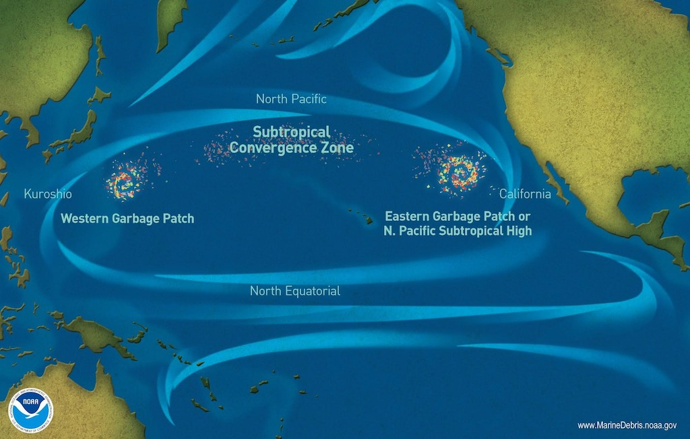

The Great Pacific Garbage Patch (GPGP)
What is GPGP?
The Great Pacific Garbage Patch, located between Hawaii and California, is the world's largest accumulation of ocean plastic. It is a massive accumulation of garbage in the North Pacific Ocean caused primarily by nations near the Pacific Rim.It is divided into two patches: the Western Garbage Patch, which is near to Japan and runs all the way to Hawaii, and the Eastern Garbage Patch, which is located between Hawaii and California.
What are the causes of the creation of such garbage patches in the ocean?
Litter in the oceans (known as marine debris) congregates due to the presence of gyres(A gyre is a whirling circulation of ocean currents that drags anything in its path). When an item floats closer to the centre of a gyre, it stays there. The North Pacific gyre formed the Great Pacific Garbage Patch by drawing marine garbage over time, and it will continue to do so in the foreseeable future. The Great Pacific Garbage Patch contains an estimated 1.8 trillion pieces of plastic, 94 percent of which is made up of microplastics. However, microplastics make for just 8% of the Great Pacific Garbage Patch's overall weight of 79,000 tonnes. The rest is made up of plastics greater than 0.5 cm in diameter, the majority of which is abandoned fishing gear. Fishing nets account for 46% of all trash. These larger pieces of trash deteriorate over time when they are exposed to the forces of nature, but they break down into microplastics that still pollute the oceans.
What are the effects of Marine life and on Humans?
The Effect On Wildlife
- Animals mistake plastic for food,causing malnutrition.There is 180x more plastic floating at the surface of the Great Pacific Garbage Patch (GPGP) than marine life. Animals traveling through or living in this region are likely to consume the patch's plastic.
- Because 84 percent of this plastic was discovered to have at least one Persistent Bioaccumulative Toxic (PBT) compound, animals consuming this trash are absorbing the toxins connected to the plastic.
- The abundance of fishing nets in the patch is also a fatal hazard to marine life. Animals that swim into these abandoned nets might become entangled, choking, and drowning.
- Ultimately, this would destabilize the food chain, reducing fish supplies and increasing costs for consumers.
The Effect on Human Beings and Society
- Once plastic enters the marine food web, it can contaminate the human food chain as well. Efforts to clean up and eliminate ocean plastic have also resulted in enormous financial costs.
- Chemicals in plastics enter the body of the animal feeding on the plastic through a process known as bioaccumulation. When the feeder becomes prey, the chemicals transfer to the predator, working their way up the food chain to humans. These toxins that harmed the plastic feeders might then be found in humans.
- According to research undertaken in partnership with Deloitte, the annual economic consequences of marine plastic are projected to be between $6 and $19 billion USD. The expenditures are incurred as a result of the impact on tourists, fisheries and aquaculture, and governmental cleanups.

What methods are implemented to combat such garbage accumulation?
Several organizations have stepped up to try to rid the Pacific of its garbage vortex:
-
Algalita Marine Research Foundation:
It was founded in 1999 with the objective of educating people about the patch and ocean pollution in general. Expeditions and research into the patch and other gyres loaded with the world's trash have been pioneered by the organization. -
Cleanup of the Ocean:
They have created a low-cost, passive waste collection system. They now have a 600-meter U-shaped floating tube that floats with the ocean currents and gathers trash, including microplastics, with a 3-meter-deep screen that marine life may swim behind. Resulting from several research missions, traveling across and above the GPGP, The Ocean Cleanup team compiled an unprecedented amount of data to better understand the plastic that persists in this region -
Institute for Ocean Voyages:
In 1979, seafarers and environmentalists joined together to form the Ocean Voyages Institute, a non-profit organization that provides maritime education to youngsters worldwide.
Some Expeditions:
-
Expedition 2015 — Multi-Level Trawl:
The Ocean Cleanup developed novel study equipment called the multi-level-trawl, which permitted simultaneous readings of 11 water layers as deep as 5 meters below the surface level. The multi-level trawl enabled the crew to explore further into the water and determine the depths to which buoyant plastic may be spread. -
Mega Expedition 2015:
As part of the Mega Expedition, 30 boats and 652 surface nets traversed the GPGP in tandem in 2015. The fleet returned with almost 1.2 million plastic samples, yielding an unparalleled number of plastic measures from the three-month research. -
Aerial Expedition in 2016:
The Ocean Cleanup examined 311 km2 using modern sensors and an RGB camera (CS-4800i) that collected one photo every second of flight time aboard a C-130 Hercules aircraft. They flew two missions and returned with almost 7,000 single-frame mosaics from the operation.
Plastics of various types and sizes were analysed by putting them in combinations that allowed the different compounds to be recognized. Because it is well known that dangerous PBT (Persistent Bioaccumulative Toxic) compounds may be detected in ocean plastics, several researchers analyzed plastic samples from the excursions to determine their chemical levels.